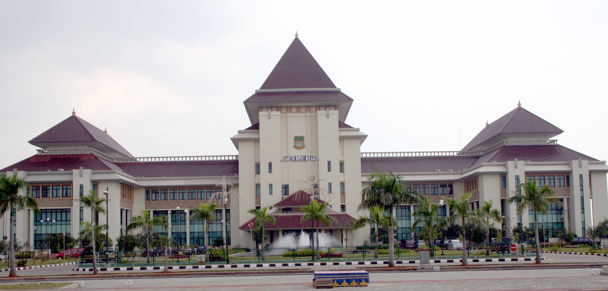
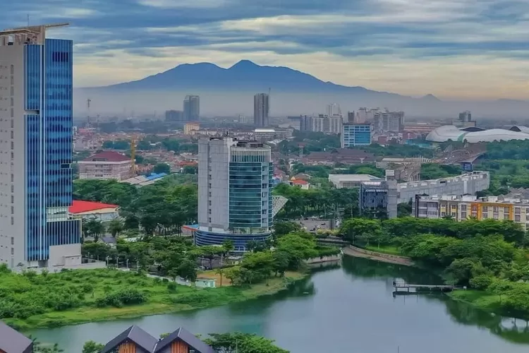
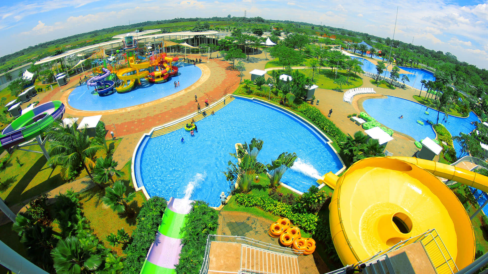
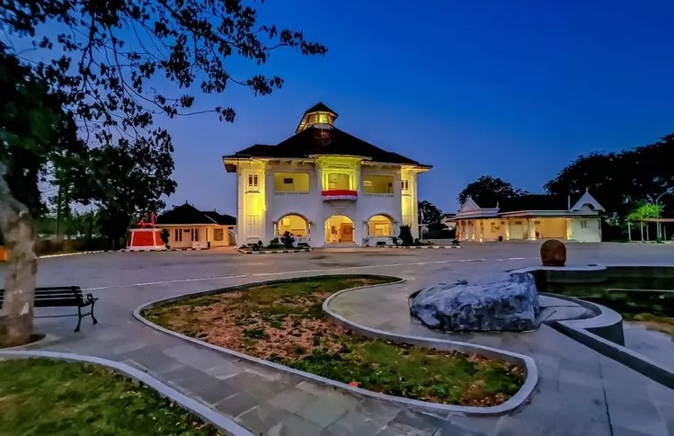
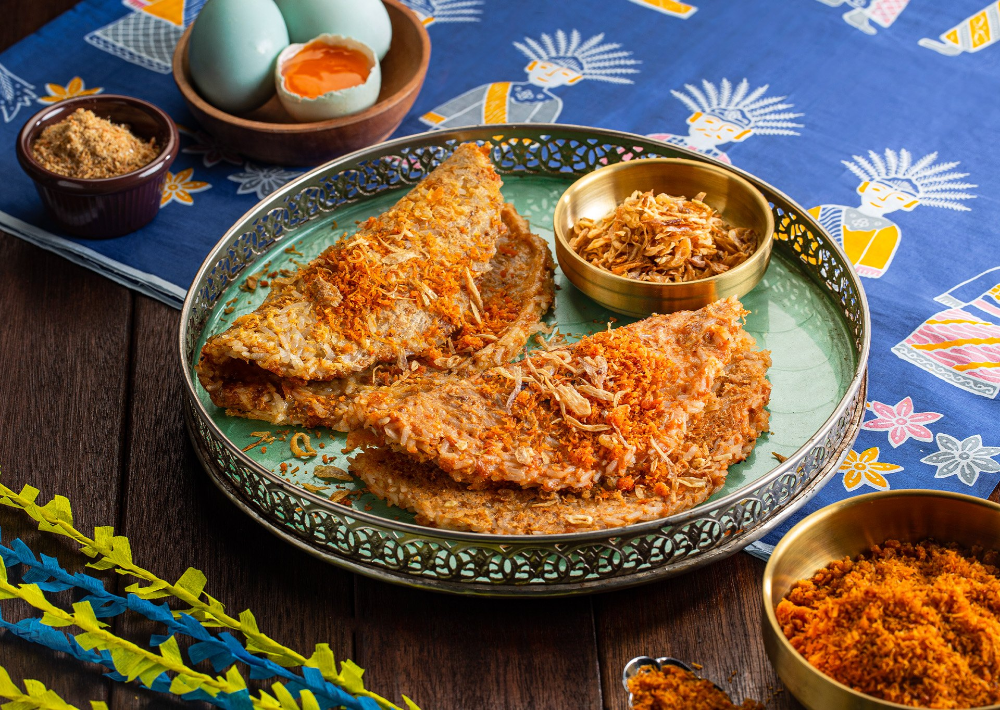
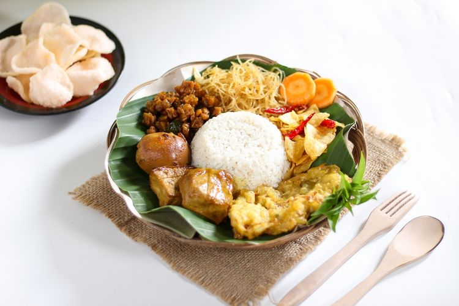

Sejarah

Kota Bekasi memiliki sejarah yang sangat panjang dan kaya akan nilai-nilai budaya. Nama Bekasi diyakini
berasal dari kata “Bagasasi,” yang berarti perbatasan. Ini merujuk pada letak geografis Bekasi yang berada
di antara dua kekuasaan besar pada masa lalu, yaitu Kerajaan Tarumanegara di sebelah barat dan Kerajaan Sunda
di sebelah timur. Bukti tertua keberadaan Bekasi dapat ditemukan pada Prasasti Tugu yang menunjukkan pengaruh
besar dari kerajaan Tarumanegara pada abad ke-5 Masehi. Bekasi kemudian berkembang menjadi wilayah strategis,
terutama di masa penjajahan Belanda ketika banyak infrastruktur modern mulai dibangun di kota ini.
Selain itu, selama masa perjuangan kemerdekaan Indonesia, Bekasi juga menjadi saksi dari berbagai pertempuran
yang menentukan dalam mengusir penjajah. Gedung Juang 45 adalah salah satu monumen penting yang menggambarkan
semangat perjuangan para pahlawan Bekasi. Kini, Bekasi terus berkembang menjadi pusat industri dan perumahan
yang penting, tetapi jejak sejarahnya tetap hidup di berbagai situs dan tradisi yang masih dijaga oleh masyarakat
setempat.
Geografis

Kota Bekasi terletak di bagian timur Jakarta, berbatasan langsung dengan ibu kota negara Indonesia.
Secara geografis, Bekasi memiliki posisi yang sangat strategis, menjadikannya salah satu kota penyangga
utama bagi wilayah Jabodetabek (Jakarta, Bogor, Depok, Tangerang, Bekasi). Dengan luas wilayah sekitar 210,49
kilometer persegi, Bekasi terdiri dari area dataran rendah yang banyak digunakan untuk pemukiman dan industri.
Bekasi juga dialiri oleh beberapa sungai besar, seperti Sungai Bekasi dan Sungai Cikarang, yang berperan penting
dalam kehidupan sehari-hari penduduk.
Secara iklim, Bekasi memiliki iklim tropis dengan suhu yang cenderung hangat sepanjang tahun. Curah hujan di kota ini
cukup tinggi, terutama pada musim penghujan yang biasanya terjadi antara bulan November hingga Maret. Bekasi juga dikenal
dengan perkembangan urbanisasinya yang sangat cepat dalam beberapa dekade terakhir. Hal ini berdampak pada kepadatan penduduk
yang terus meningkat, serta kebutuhan infrastruktur dan fasilitas publik yang lebih besar. Meskipun demikian, Bekasi terus berusaha
menjaga keseimbangan antara pembangunan modern dan keberlanjutan lingkungan melalui berbagai program pemerintah setempat.
Wisata
Di balik citra Bekasi sebagai kota industri yang padat, terdapat berbagai destinasi wisata yang menarik dan layak untuk dikunjungi.
Kota ini menawarkan pengalaman beragam, mulai dari wisata sejarah, budaya, hingga wisata modern. Salah satu daya tarik utama
di Bekasi adalah keberadaan situs-situs bersejarah yang menceritakan kisah perjuangan rakyat Bekasi, serta berbagai destinasi
wisata modern yang cocok untuk keluarga dan anak-anak.
Go! Wet Waterpark

Go! Wet Waterpark, terletak di kawasan Grand Wisata, adalah salah satu taman air terbesar di Bekasi.
Tempat ini menjadi tujuan utama bagi wisatawan yang ingin menikmati berbagai wahana air yang seru dan
menyegarkan. Dengan berbagai fasilitas modern dan area permainan yang luas, Go! Wet menawarkan pengalaman
liburan yang menyenangkan bagi keluarga. Selain itu, lokasi yang strategis di jalur tol Bekasi Timur
membuatnya mudah diakses oleh pengunjung dari berbagai daerah.
Gedung Juang 45

Gedung Juang 45 adalah salah satu bangunan bersejarah di Bekasi yang memiliki nilai historis tinggi.
Dibangun pada masa penjajahan Belanda, gedung ini menjadi saksi bisu dari perjuangan rakyat Bekasi
dalam merebut kemerdekaan. Kini, Gedung Juang 45 telah diubah menjadi museum yang terbuka untuk umum,
menampilkan berbagai artefak dan dokumentasi sejarah perjuangan kemerdekaan. Gedung ini sering menjadi
tujuan wisata edukasi bagi pelajar dan wisatawan yang tertarik dengan sejarah nasional.
Makanan Tradisional Khas Bekasi
Bekasi memiliki beragam makanan tradisional yang kaya rasa dan berakar dari budaya lokal. Makanan-makanan ini
tidak hanya menggugah selera tetapi juga mencerminkan warisan budaya masyarakat Bekasi yang patut dilestarikan.
Kerak Telor

Kerak Telor adalah makanan khas Betawi yang juga populer di Bekasi. Terbuat dari campuran beras ketan, telur,
dan kelapa, makanan ini dimasak dengan cara dipanggang di atas api. Kerak Telor memiliki cita rasa gurih dan
sering disajikan dengan serundeng (kelapa parut yang digoreng) dan bawang goreng.
Asinan Betawi

Asinan Betawi adalah salad sayuran dan buah yang direndam dalam air garam dan cuka. Makanan ini memiliki rasa asam,
pedas, dan manis yang segar. Biasanya disajikan dengan sambal kacang, Asinan Betawi menjadi pilihan yang pas untuk
menyegarkan saat cuaca panas.
Nasi Uduk

Nasi Uduk adalah hidangan nasi yang dimasak dengan santan, memberikan cita rasa gurih yang khas. Nasi ini biasanya
disajikan dengan berbagai lauk pendamping seperti ayam goreng, tempe orek, dan sambal. Nasi Uduk menjadi salah satu
makanan favorit di Bekasi, terutama saat sarapan.